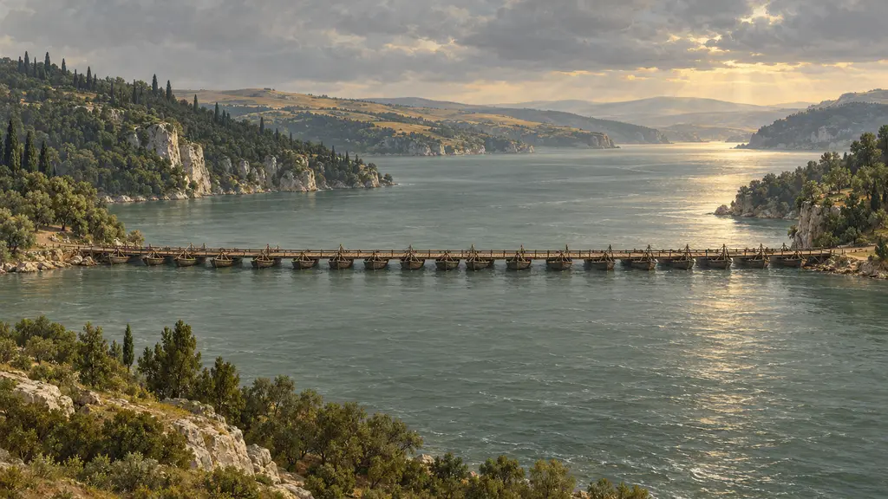
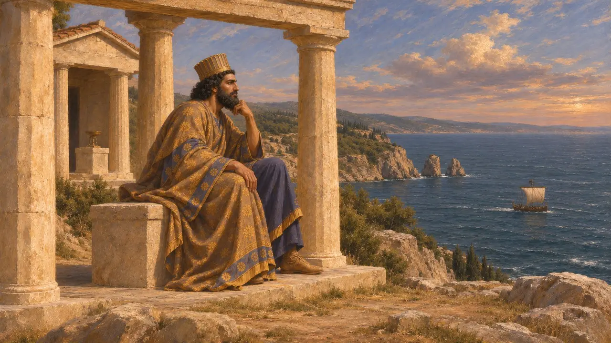
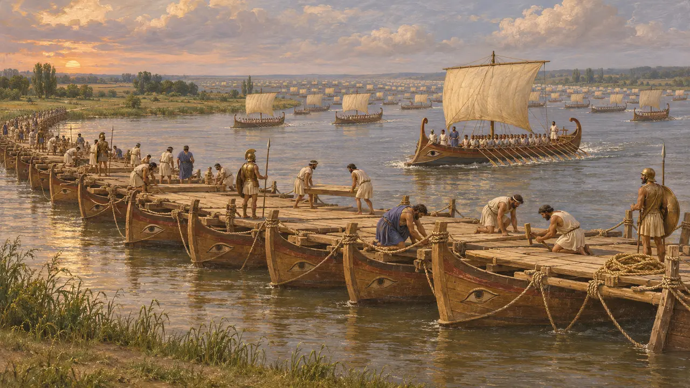
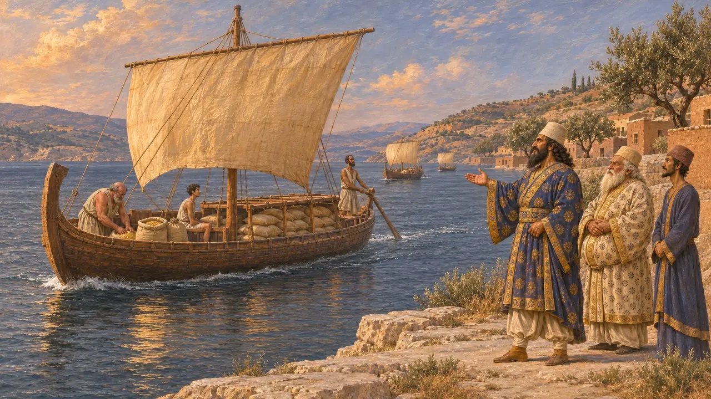
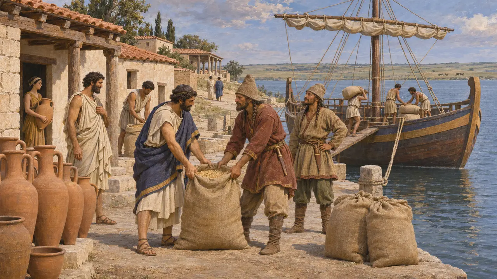

دریای سیاه
پونتوس، دریای شمال آسیای کوچک که سپاه داریوش و کشتیهای غلهاش از آن گذشتند، ۵۱۳-۴۸۰ پ.م.
دریای سیاه، پونتوس یا پونتوس اوکسینوس یونانیان، میان آسیای کوچک، تراکیه و دشت سکاها گسترده است. کوچنشینهای میلتوس و دیگر شهرهای یونانی گرداگرد کرانههایش بودند و غلهاش یونان را سیر میکرد. داریوش پیش از لشکرکشی به سرزمین سکاها از بسفر بر آن نگریست، و ایونیان برای پل زدن بر ایستروس در آن پیش رفتند.
در بازی: دریای سیاه در آغاز مرحلهٔ ایستروس، آنجا که ایونیان در آن به سوی رود میروند، و در کشتیهای غلهٔ مرحلهٔ ترموپیل آمده است.

داریوش بر پونتوس مینگرد
روایت باستانیهرودوت میگوید داریوش چون به بسفر رسید، با کشتی تا صخرههای کیانه رفت، در پرستشگاه آنجا نشست و بر پونتوس، شگفتانگیزترین همهٔ دریاها، نگریست. او درازای آن را ۱۱۱۰۰ ستادیون و پهنای بیشینهاش را ۳۳۰۰ میگوید، بر پایهٔ راهی که کشتی در شب و روز میپیماید.
Herodotus 4.85-86

ناوگان به سوی ایستروس
روایت باستانیبرای لشکرکشی به سرزمین سکاها، داریوش ایونیان و دیگر یونانیان ناوگانش را به پونتوس تا ایستروس فرستاد تا در دو روز راه دریایی بالاتر از دریا بر رود پل بزنند. هرودوت میگوید آنان با ششصد کشتی آمدند.
Herodotus 4.87, 4.89


کوچنشینها
در اسنادکاوشها در ایستروس، اولبیا، آپولونیا، سینوپ و شهرهای دیگر، کوچنشینهای یونانی را از اواخر سدهٔ هفتم بر کرانهها نشان میدهد که بیشترشان را میلتوس بنیاد نهاد. سفال، سکه و کتیبههایشان بازرگانی میان دشت و دریای اژه را ثبت کرده است.
Excavations at Istros, Olbia and Apollonia Pontica
منابع
- Herodotus 4.17, 4.85-89, 7.147
- G. R. Tsetskhladze, ed., The Greek Colonisation of the Black Sea Area, 1998